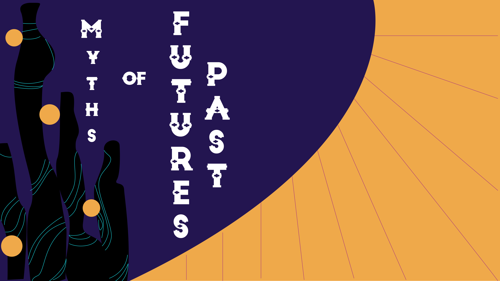
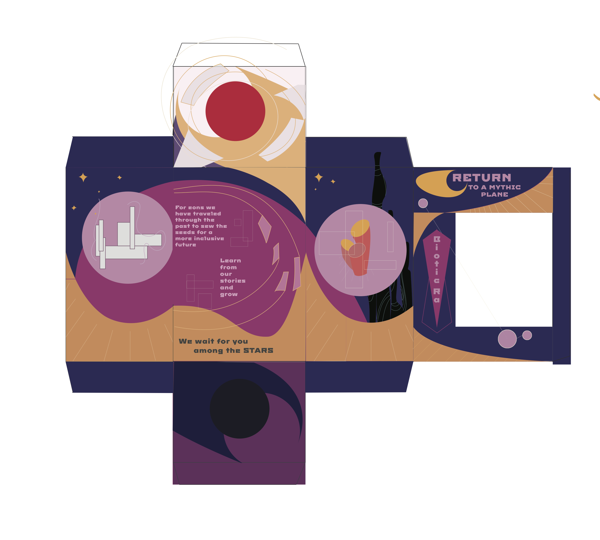

OBJECTIVE
Redesign packaging for iconic cultural figures to challenge the way consumers think about those figures.
IDEATION
After being assigned the Cyborg Funko Pop doll, my partner and I immediately looked for a way to combine commentary on race and technology. Afrofuturism, with its rich cultural and narrative tradition, allowed us to design around questions about reimagined futures and how mythology interacts with technology
ITERATION

For our box design, we went in with the idea of creating the feeling of this new world that was a synthesis of technology and organic matter.
By choosing a color palette that was heavily influenced by existing Afrofuturist artwork and focusing on a dark base color with bold accents and rich jewel tones, we conveyed a vibrant, royal look.
Keeping in mind the idea of synthesis, we chose to connect all of the panels instead of designing separately for each side, because we thought that it would create a cohesive atmosphere for whole box and the world we had built. To connect the panels we used sweeping curves, organic shapes, sharp lines, and manipulated geometric shapes, because they felt sleek and futuristic, while not being too rigid or harsh.
It was our goal to frame the Cyborg doll as a hero or a new life from from the future, but that his culture was still distinctly tied to the traditions of the past.